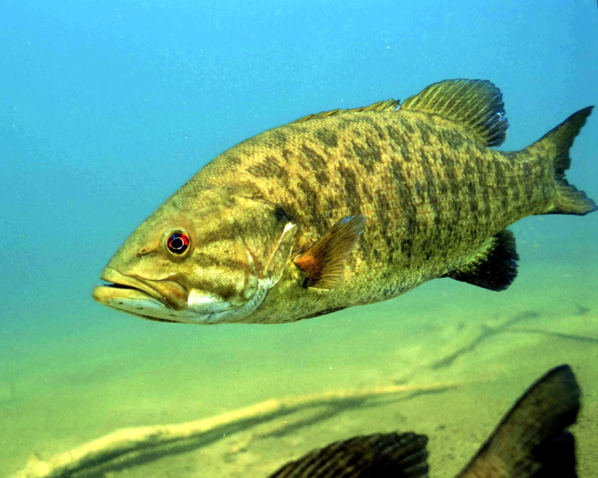

all about fishing
all types of fresh water fish
bass
trout
catfish
panfish
pike and
bluegile

all types of reels
bait fishing, fly-fishing, bait casting, spinning, and trolling
all types of luers
Jig
Spinnerbaits
Spoons
Topwaters
Spoon lure
Soft plastics
Swimbaits
Crankbaits
Artificial fly
Spinners
Buzzbaits
Crankbait
Plastic baits
Plugs
Jerkbaits
Blade baits
Chatterbait
Creature baits
Popper lures
Worms
Frog
Minnow
Natural baits
Cut bait